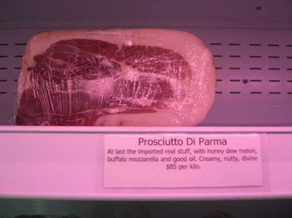

Italian Pork Roast

Photo: avlxyz (CC BY-SA 2.0)
A boneless pork loin roast studded with garlic, brushed with olive oil, and seasoned with Italian herbs and pepper, then oven-roasted and rested to temperature.
Directions
- Place roast in a shallow roasting pan. Cut 8 small slits into roast at 2 inch intervals; insert garlic halves deep into slits. Brush olive oil evenly over roast, and sprinkle with Italian seasoning and pepper. Insert meat thermometer, making sure it does no touch fat. Bake at 325 degrees for 1 1/2 hours (30 minutes per pound) or until thermometer reaches 155 degrees. Remove from oven and cover loosely with foil. Let stand 15 minutes or until temp reaches 160 degrees.
- Place the roast in a shallow roasting pan.
- Cut 8 small slits into the roast at 2-inch intervals; insert the garlic halves deep into the slits.
- Brush olive oil evenly over the roast, and sprinkle with the Italian seasoning and pepper.
- Insert a meat thermometer, making sure it does not touch fat.
- Bake at 325 degrees for 1 1/2 hours (30 minutes per pound), or until the thermometer reaches 155 degrees.
- Remove from the oven and cover loosely with foil.
- Let stand 15 minutes, or until the temperature reaches 160 degrees.
Goes well with
https://baron-3dl.github.io/normans-kitchen/recipe/italian-pork-roast.html